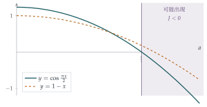

STEP III 2014，第 4 题
继续之前，请先阅读题目（原题为英文）。题目载于 STEP Support Programme 的题目资料库： step.maths.org/questions/14-s3-q4
引子
中学里的最优化（optimisation）问题，大多是求最佳的数：例如求令面积最大的 \(x\) 值。变分法（calculus of variations）要求的却是最佳的函数。连接两点的曲线之中，珠子沿哪一条滑下最快？悬挂的链条会呈甚么形状？光线穿过透镜时走哪一条路径？在这些例子中，要优化的量都是一个积分，而未知的是一整个函数。
本题研究的是最简单而又有趣的例子。积分 \(J = \int_0^1 \bigl((y')^2 - a^2y^2\bigr)\,\mathrm{d}x\) 在两个互相竞争的项之间取得平衡：函数愈陡，积分愈大；函数值愈大，积分愈小。当 \(a\) 较小时，陡峭程度总是占上风，所以对每个函数都有 \(J \geq 0\)。但 \(a\) 有一个临界值，平衡会在那里逆转，而本题正好把它准确求出：\(a = \frac\pi2\)。\(\pi\) 从何而来，就是本节要讲的故事。
动笔之前
为甚么 \(I \geq 0\) 并非显而易见？试用 \(y = 1 - x\)，它满足 \(y(1) = 0\)。
\(I\) 是两个正数量之差，所以它可正可负。对于 \(y = 1 - x\)：\(\int_0^1 1\,\mathrm{d}x = 1\) 而 \(\int_0^1 (1-x)^2\,\mathrm{d}x = \frac13\)，所以 \(I = \frac23 > 0\)。但若函数选得更巧妙，或许可以令 \(\int y^2\) 相对于 \(\int (y')^2\) 变得更大。题目的窍门，是把 \(I\) 写成一个平方的积分，而这显然是非负的。这就是积分版本的“配方法”（completing the square）。
逐步解题
阶段 1 配方
把 \(I_1\) 中的平方展开： \[I_1 = \int_0^1 \bigl((y')^2 + 2yy'\tan x + y^2\tan^2 x\bigr)\,\mathrm{d}x,\] 所以 \[I - I_1 = -\int_0^1 \bigl(y^2 + y^2\tan^2 x + 2yy'\tan x\bigr)\,\mathrm{d}x = -\int_0^1 \bigl(y^2\sec^2 x + 2yy'\tan x\bigr)\,\mathrm{d}x.\]
被积函数 \(y^2\sec^2 x + 2yy'\tan x\) 恰好是某个函数的导数（exact derivative）。是哪个函数？
根据乘积法则（product rule），\(\dfrac{\mathrm{d}}{\mathrm{d}x}\bigl(y^2\tan x\bigr) = 2yy'\tan x + y^2\sec^2 x\)。所以 \[I - I_1 = -\Bigl[y^2\tan x\Bigr]_0^1 = -\bigl(y(1)^2\tan 1 - y(0)^2\tan 0\bigr) = 0,\] 因为 \(y(1) = 0\) 而 \(\tan 0 = 0\)。所以 \(I = I_1 \geq 0\)，因为它是一个平方的积分。■
阶段 2 何时 \(I = 0\)？
如果一个连续的非负函数的积分是零，你对这个函数能下甚么结论？那么若 \(I = 0\)，\(y\) 必须满足甚么方程？
积分为零的连续非负函数必定恒等于零（假如它在某一点取正值，它在该点附近的一个小区间上也会取正值，从而贡献一个正的量）。所以 \(I = 0\) 迫使 \(y' + y\tan x = 0\) 在 \([0, 1]\) 上成立。乘以 \(\sec x\) 后，这就是说 \(\frac{\mathrm{d}}{\mathrm{d}x}\left(\frac{y}{\cos x}\right) = \frac{y'\cos x + y\sin x}{\cos^2 x} = 0\)，所以 \(y = C\cos x\)。于是 \(y(1) = C\cos 1 = 0\)，而由于 \(\cos 1 \neq 0\)，得 \(C = 0\)。所以只有当 \(y \equiv 0\) 时才有 \(I = 0\)。■
阶段 3 一般情况
用 \(\int_0^1 (y' + ay\tan bx)^2\,\mathrm{d}x\) 重复第 1 步。\(b\) 必须是甚么，余下的项才能恰好组成一个导数？
把这个积分记作 \(K\)。那么 \[\begin{aligned} J - K &= -\int_0^1 \bigl(a^2y^2 + a^2y^2\tan^2 bx + 2ayy'\tan bx\bigr)\,\mathrm{d}x \\ &= -\int_0^1 \bigl(a^2y^2\sec^2 bx + 2ayy'\tan bx\bigr)\,\mathrm{d}x. \end{aligned}\] 另一方面，\(\frac{\mathrm{d}}{\mathrm{d}x}\bigl(ay^2\tan bx\bigr) = 2ayy'\tan bx + ab\,y^2\sec^2 bx\)。两者恰好在 \(ab = a^2\) 时吻合，即 \(b = a\)。于是 \[J - K = -\Bigl[ay^2\tan ax\Bigr]_0^1 = -a\,y(1)^2\tan a = 0,\] 所以 \(J = K \geq 0\)。
这个论证在哪里可能失效？（留意 \(\tan ax\) 在区间 \(0 \leq x \leq 1\) 上的情况。）
这个论证需要 \(\tan ax\) 对 \([0, 1]\) 内所有 \(x\) 都有定义而且连续；否则 \(K\) 未必存在，微积分基本定理（fundamental theorem of calculus）亦不能应用。当 \(x\) 取遍 \([0, 1]\) 时，\(ax\) 取遍 \([0, a]\)，而 \(\tan\) 在该处连续的充要条件正是 \(a < \frac\pi2\)。所以这个证明在以下情况成立： \[a < k = \frac\pi2. \qed\]
阶段 4 临界情况
当 \(a = \frac\pi2\) 时，证明失效。在第 2 步，令 \(I = 0\) 的函数须满足 \(y' + y\tan x = 0\)。现在对应的方程是甚么？它的解又是甚么？
对应的方程是 \(y' + ay\tan ax = 0\)，它的解是 \(y = C\cos ax\)。当 \(a = \frac\pi2\) 时，\(y = \cos\frac{\pi x}{2}\) 满足 \(y(1) = \cos\frac\pi2 = 0\)。直接验证： \[\begin{aligned} J &= \frac{\pi^2}{4}\int_0^1 \left(\sin^2\frac{\pi x}{2} - \cos^2\frac{\pi x}{2}\right)\mathrm{d}x = -\frac{\pi^2}{4}\int_0^1 \cos\pi x\,\mathrm{d}x \\ &= -\frac{\pi^2}{4}\left[\frac{\sin\pi x}{\pi}\right]_0^1 = 0. \qed \end{aligned}\] 所以在临界值处，有一个非零函数令 \(J\) 恰好等于零。
回顾
在积分中配方。加上再减去一个恰好是导数的式子，便把 \(J\) 化成一个平方的积分，再加上一个等于零的边界项（boundary term）。
查看工具在哪里失效。这个方法只在 \(\tan ax\) 在区间上保持有限时才行得通。它失效之处 \(a = \frac\pi2\)，正正就是临界值。
极端情况是某个微分方程的解。令 \(J = 0\) 的函数来自一阶微分方程（differential equation）\(y' + ay\tan ax = 0\)，而它同时满足 \(y'' + a^2y = 0\)。
背后的数学
1696 年，约翰·伯努利（Johann Bernoulli）向欧洲的数学家发出挑战：求一条曲线，使珠子沿着它从一点滑到另一点所需的时间最短。这就是最速降线（brachistochrone）问题。提交解答的有牛顿（Newton）（他匿名投稿，一夜之间解出；伯努利说他“从爪子认出了狮子”）、莱布尼兹（Leibniz）、洛必达（l’Hôpital）和雅各布·伯努利（Jakob Bernoulli）。答案是一条摆线（cycloid）。到了 1750 年代，欧拉（Euler）和年轻的拉格朗日（Joseph-Louis Lagrange）把这些个别的技巧变成一套通用的方法：如果 \(y\) 令 \(\int F(x, y, y')\,\mathrm{d}x\) 取平稳值，那么 \(y\) 满足欧拉－拉格朗日方程（Euler–Lagrange equation） \[\frac{\mathrm{d}}{\mathrm{d}x}\frac{\partial F}{\partial y'} = \frac{\partial F}{\partial y}.\] 对于我们的 \(J\)，\(F = (y')^2 - a^2y^2\)，而欧拉－拉格朗日方程就是 \(y'' + a^2y = 0\)：简谐运动（simple harmonic motion）。
为何是 \(\pi/2\)？
当 \(a < \frac\pi2\) 时，\(J\) 的最小值是 \(0\)，而且只有 \(y \equiv 0\) 才能取得。当 \(a = \frac\pi2\) 时，最小值仍然是 \(0\)，但多了一个函数能取得它。当 \(a > \frac\pi2\) 时，同一个函数 \(y = \cos\frac{\pi x}{2}\) 给出 \[J = \frac{\pi^2}{8} - \frac{a^2}{2} < 0,\] 而只要把 \(y\) 按比例放大，\(J\) 就可以负得要多大有多大：根本没有最小值（图 4.7.1）。临界值就是第一个令 \(y'' + a^2y = 0\) 有非零解满足边界条件的 \(a\)（边界条件是 \(y(1) = 0\)，以及在自由端的“自然”条件 \(y'(0) = 0\)）。这是一个特征值问题（eigenvalue problem），而 \(a^2 = \frac{\pi^2}{4}\) 是它最小的特征值。试与 第 3.7 节 比较：那里把函数在长度为 \(\pi\) 的区间的两端都固定，得出临界值 \(1\)；这里区间长度为 \(1\)，而且只固定一端，相当于长度为 \(2\) 的区间的一半，所以临界的 \(a\) 是 \(\frac{\pi}{2}\)。

物理学与最小作用量原理
后来发现，变分法描述的竟是大自然本身。在十八和十九世纪，人们逐渐明白运动定律可以这样表述：力学系统的运动方式，会令一个称为作用量（action）的积分取平稳值，这就是最小作用量原理（principle of least action）。同样，光沿着需时最短的路径前进（费马原理，Fermat’s principle），这解释了折射现象。到了二十世纪，同一个想法通过费曼（Richard Feynman）的“路径求和”（sum over paths），成为量子力学的基础。本题中的二次积分是最简单的例子，而它们引出的特征值问题，会在 第 8.6 节 以量子振子能级的面貌再次出现。
思维技巧
要证明一个二次式非负，可把它写成一个平方加上一些你能控制的东西。对于积分，这些“东西”往往恰好是某个函数的导数，积分后便成为边界项。
此外，永远要问这个方法在哪里不再奏效。本题中方法失效之处并非偶然；它正是题目中最重要的那个数。
延伸练习
越过临界值。证明若 \(a > \frac\pi2\)，则 \(y = \cos\frac{\pi x}{2}\) 给出 \(J < 0\)。
欧拉－拉格朗日方程。 较难 设 \(y\) 在满足 \(y(1) = 0\) 的函数之中令 \(J\) 取最小值。对任何满足 \(\eta(1) = 0\) 的函数 \(\eta\) 和任何数 \(\varepsilon\)，都有 \(J(y + \varepsilon\eta) \geq J(y)\)。把 \(J(y + \varepsilon\eta)\) 按 \(\varepsilon\) 的幂展开，并由此推出 \(\int_0^1 (y'\eta' - a^2y\eta)\,\mathrm{d}x = 0\)。用分部积分法（integration by parts）证明 \(y'' + a^2y = 0\) 及 \(y'(0) = 0\)（假设 \(y\) 足够光滑）。
较长的区间。用代换法（substitution）证明：若 \(y(L) = 0\)，则 \(\int_0^L \bigl((y')^2 - a^2y^2\bigr)\,\mathrm{d}x \geq 0\) 对所有 \(y\) 成立，当且仅当 \(a \leq \frac{\pi}{2L}\)；并证明只有当 \(a = \frac{\pi}{2L}\) 时，才有非零的 \(y\) 令等号成立。
摆线。查阅最速降线问题，并找出摆线的参数方程（parametric equations）。证明在一条倒置的摆线上，珠子无论从哪一点由静止释放，到达最低点所需的时间都相同（这是等时（tautochrone）性质，由惠更斯（Huygens）于 1659 年发现）。
延伸阅读
Paul Nahin, When Least Is Best（Princeton University Press）。讲述最优化的历史与数学，包括最速降线，为学生而写。
Richard Feynman, The Feynman Lectures on Physics，第二卷第 19 章（“The principle of least action”，最小作用量原理）。可在网上免费阅读。
Bruce van Brunt, The Calculus of Variations（Springer）。一本大学本科教科书；头几章只需要高级程度（A-level）的微积分知识。